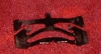
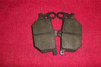

Brake pads are two small steel plates with friction material, held inside the caliper on either side of the brake disc. You can usually see their edges by looking into the caliper from behind or below.
What it does
When you brake, the caliper pistons press the pads onto the disc. The friction material wears away a little every stop. Most pads have a groove or notch that shows the wear limit. When the material is gone, the steel backing plate cuts into the disc and braking becomes very weak.
Signs it is worn or failing
- Squeal: Brakes squeal.
- Grinding or scraping metal: Brakes grind. Stop riding.
- Weak stopping with a firm lever: Weak brakes.
- One pad thinner than the other, or tapered: Pads wear unevenly, often a sticking caliper.
- Pads soaked with oil or fluid cannot be cleaned; replace them.
When to replace it
Replace when the friction material reaches the wear groove or the limit in your manual. Always replace both pads in a caliper together. Replace any pad contaminated with oil or brake fluid.
What to match when buying
- Make, model, year, front or rear, and caliper brand. The backing plate shape and pin holes must match the old pad exactly.
- Pad makers use their own code (for example FA plus a number). Look it up for your bike, then compare shapes.
- Compound: organic (resin) pads are gentle and quiet but wear faster and fade under heavy use. Sintered (metal) pads bite harder and last longer but need a disc made for them. Use the type your bike came with unless the manual allows another.
- Fake pads may have friction material that falls off or contains no proper compound. Avoid pads sold loose without a box, with blurred printing, or far below normal price.
Fitting notes
- Never press the lever with the pads out. Push the pistons back slowly and watch the reservoir does not overflow.
- Bed in new pads with several gentle stops before hard braking.
- Home job: Replace disc brake pads. Check: Check brake pad wear.
- Pads in one caliper can wear by different amounts. Look at both pads at each check and replace them as a pair.
- With the wheel off the bike, put a piece of wood or steel between the pads so that squeezing the lever cannot push the pistons out.
- Refit any anti-rattle spring or clip that came with the old pads. Some pads are round and sit in recesses in the caliper.
Reference (K-Light 125)
| Item | Standard | Limit | PDF page |
|---|---|---|---|
| Pad friction material, front and rear | 6.0 mm | 3 mm | 66, 109 |